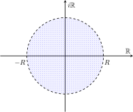

6 Séries entières
Dans ce chapitre, \(\mathbb{K}\) désigne \(\mathbb{R}\) ou \(\mathbb{C}\).
Introduction
Une série entière est un type particulier de série numérique de la forme
\[ \sum a_{n}z^{n} \]
où \((a_{n})\) est une suite de \(\mathbb{K}\) et \(z \in \mathbb{K}\). On peut donc penser à une série entière comme un « polynôme infini ».
Comme toute série numérique, une série entière possède une nature ; elle peut converger, diverger, converger absolument, etc. Dans le cas des séries entières, la situation est particulièrement tranchée puisqu’on montre l’existence d’un réel \(R \in \mathbb{R}_{+}\cup \{+\infty\}\), le rayon de convergence, tel que la série converge absolument si \(|z|<R\) et diverge grossièrement si \(|z|>R\).
Toute série entière définit donc naturellement sur son disque ouvert de convergence une fonction, avec laquelle il est très facile de calculer. En particulier, on peut dériver ou intégrer la somme d’une série entière comme on le ferait avec un polynôme. Les séries entières se prêtent donc particulièrement bien à la résolution d’équations différentielles, et ce sera pour nous leur principale application.
Les séries entières permettent également des raisonnements plus algébriques et combinatoires, via l’unicité de leurs coefficients \((a_{n})_{n\in \mathbb{N}}\), comme dans le cas des polynômes. Malheureusement, le produit de deux séries entières n’est pas au programme en TSI, ce qui vient affaiblir cet aspect algébrique en ne conférant pas à l’ensemble des séries entières sa structure la plus générale.
6.1 Convergence d’une série entière
6.1.1 Définition
Définition 6.1 (Série entière) On appelle série entière en la variable \(z\in \mathbb{K}\) toute série numérique de la forme \(\sum a_nz^n\) où \((a_n)\) est une suite de \(\mathbb{K}\). Les scalaires \(a_n\) s’appellent les coefficients de la série entière \(\sum a_nz^n\).
Remarque 6.1. La variable \(z\) est muette. Lorsque celle-ci est réelle, on la note plutôt \(x\) ou \(t\).
Exemple 6.1 La somme d’une série entière ne commence pas nécessairement à \(n=0\) ; les premiers coefficients peuvent être nuls.
\[ \sum_{n \geqslant 1} \frac{x^{n}}{n} = x + \frac{x^{2}}{2}+ \dots \]
Exemple 6.2 Certaines puissances peuvent être manquantes ; ceci correspond à la nullité de certains coefficients.
\[ \sum_{n \geqslant 0} (-1)^{n}t^{2n} = 1 - t^{2} + t^{4} - \dots \]
Exemple 6.3 Un polynôme est une série entière dont tous les coefficients sont nuls à partir d’un certain rang.
6.1.2 Rayon de convergence d’une série entière
Les résultats de convergence d’une série entière sont basés sur le lemme suivant.
Lemme 6.1 (Lemme d’Abel) Soit \(r>0\) tel que la suite \((a_{n}r^{n})\) soit bornée. Alors pour tout \(z \in \mathbb{K}\) avec \(|z|<r\), la série \(\sum a_{n}z^{n}\) converge absolument.
Soit \(A\) un ensemble non vide et majoré de \(\mathbb{R}\). Alors \(A\) possède une borne supérieure \(m \in \mathbb{R}\) définie par les deux propriétés suivantes :
la borne supérieure \(m\) de \(A\) est un majorant de \(A\) i.e.
\[ \forall a \in A,\ a \leqslant m, \]
La borne supérieure \(m\) de \(A\) est le plus petit majorant de \(A\) i.e.
\[ \forall x<m,\quad \exists a \in A,\ x<a \leqslant m. \]
On note \(\sup A\) la borne supérieure de \(A\). Si \(A\) n’est pas majorée, on pose \(\sup A = +\infty\).
Définition 6.2 (Rayon de convergence) Le rayon de convergence de la série entière \(\sum a_{n}z^{n}\) est le réel \(R \in \mathbb{R}_+ \cup \{+\infty\}\) défini par
\[ R = \sup \left\{ r \geqslant 0,\ \text{$(a_{n}r^{n})$ bornée}\right\} \]
Théorème 6.1 (Convergence d’une série entière) Soit \(\sum a_{n}z^{n}\) une série entière de rayon de convergence \(R>0\). Alors
la série \(\sum a_{n}z^{n}\) converge absolument pour tout \(z \in \mathbb{K}\) avec \(|z|<R\),
la série \(\sum a_{n}z^{n}\) diverge grossièrement pour tout \(z \in \mathbb{K}\) avec \(|z|>R\),
si \(|z|=R\), tous les scénarios sont possibles (convergence, divergence, divergence grossière,…).

Définition 6.3 (Disque ouvert de convergence) Le disque ouvert de convergence d’une série entière \(\sum a_{n}z^{n}\) de rayon de convergence \(R>0\) est l’ensemble
\[ D = \{ z \in \mathbb{K},\ |z|<R\}. \]
Remarque 6.2. Si \(R=+\infty\), la série converge pour tout \(z \in \mathbb{K}\).
Remarque 6.3. Si la variable est réelle, le disque ouvert de convergence est un intervalle ouvert de convergence, égal à \(]-R,R[\).
Exemple 6.4 La série entière \(\sum z^{n}\) est une série géométrique qui converge ssi \(|z|<1\). Donc \(R=1\). De plus
\[ \forall |z|<1,\ \sum_{n=0}^{+\infty} z^{n}=\frac{1}{1-z} \]
Cet exemple montre que les séries entières englobent des fonctions bien plus générales que les polynômes.
6.1.3 Méthode pratique de calcul d’un rayon de convergence
Lorsque l’on dispose d’une formule explicite pour les coefficients d’une série entière, la manière la plus efficace est en général d’utiliser le critère de d’Alembert pour les séries numériques.
Soit \(\sum u_n\) une série à termes strictement positifs. On suppose que \(\frac{u_{n+1}}{u_n}\to \lambda\) quand \(n\to +\infty\). Alors
si \(\lambda<1\), la série \(\sum u_n\) converge absolument,
si \(\lambda>1\), la série diverge grossièrement.
Exemple 6.5 Rayon de convergence de la série entière \(\sum \frac{(-1)^{n}}{n+1}z^{n}\).
Pour \(z \neq 0\)1 et \(n \in \mathbb{N}\), posons
\[ u_{n} = \left|\frac{(-1)^{n}}{n+1}z^{n}\right|. \]
On a alors \(u_{n}>0\) et
\[ \forall n \in \mathbb{N},\ \frac{u_{n+1}}{u_{n}} = |z| \frac{n+1}{n+2} \underset{n \to +\infty}{\to} |z|. \]
Donc, par le critère de d’Alembert, la série \(\sum \frac{(-1)^{n}}{n+1}z^{n}\)
converge (absolument) si \(|z|<1\),
diverge grossièrement si \(|z|>1\).
Donc le rayon de convergence de cette série est égal à \(1\).
Exemple 6.6 Calculer le rayon de convergence de la série entière \(\sum \frac{z^{n}}{n!}\).
Pour \(z \neq 0\) et \(n \in \mathbb{N}\), posons
\[ u_{n}= \left|\frac{z^{n}}{n!}\right|. \]
On a alors \(u_{n}>0\) et
\[ \forall n \in \mathbb{N},\ \frac{u_{n+1}}{u_{n}} = \frac{|z|}{n+1} \underset{n \to +\infty}{\to} 0 <1. \]
Donc, par le critère de d’Alembert, la série \(\sum \frac{z^{n}}{n!}\) converge (absolument) pour tout \(z \in \mathbb{C}\). Donc le rayon de convergence de cette série est égal à \(+\infty\).
Exemple 6.7 Déterminer le rayon de convergence de la série entière \(\sum \frac{x^{2n}}{3^{n}+1}\).
Soit \(x \neq 0\) et \(n \in \mathbb{N}\). Posons
\[ u_{n}= \left| \frac{x^{2n}}{3^{n}+1}\right|. \]
On a \(u_{n}>0\) et
\[ \forall n \in \mathbb{N},\ \frac{u_{n+1}}{u_{n}}= |x^{2}|\frac{3^{n+1}+1}{3^{n}+1} \sim 3|x|^{2} \underset{n \to +\infty}{\to} 3|x|^{2}. \]
Donc, par le critère de d’Alembert, la série \(\sum \frac{x^{2n}}{3^{n}+1}\)
converge (absolument) si \(3|x|^{2}<1\) i.e. si \(|x|<\frac{1}{\sqrt{3}}\),
diverge grossièrement si \(3|x|^{2}>1\) i.e. si \(|x|>\frac{1}{\sqrt{3}}\).
Donc le rayon de convergence de cette série est \(\frac{1}{\sqrt{3}}\).
Pour calculer un rayon de convergence, il faut traduire la condition donnée par le critère de d’Alembert en une condition sur le module de la variable.
Quand on ne dispose pas de formule explicite pour les coefficients, mais seulement d’informations qualitatives (par exemple une majoration ou un équivalent), on peut utiliser l’un des résultats suivants.
Proposition 6.1 Si \(|a_{n}|\leqslant |b_{n}|\) pour tout \(n \in \mathbb{N}\), alors le rayon de convergence \(R_{a}\) de la série entière \(\sum a_{n}z^{n}\) est supérieur ou égal au rayon de convergence \(R_{b}\) de la série entière \(\sum b_{n}z^{n}\) i.e.
\[ R_{a} \geqslant R_{b}. \]
Proposition 6.2 Si \(a_{n} \sim b_{n}\) alors les séries entières \(\sum a_{n}z^{n}\) et \(\sum b_{n}z^{n}\) ont même rayon de convergence.
Exemple 6.8 Déterminer le rayon de convergence de la série entière \(\sum \frac{n}{n+1}z^{n}\).
Pour tout \(z \in \mathbb{C}\), on a
\[ \frac{n}{n+1}z^{n} \sim z^{n}. \]
De plus la série entière \(\sum z^{n}\) possède un rayon de convergence égal à \(1\) (série géométrique). Donc le rayon de convergence de la série \(\sum \frac{n}{n+1}z^{n}\) est égal à \(1\).
Exemple 6.9 On suppose que
\[ \forall n \in \mathbb{N},\ 0 \leqslant a_{n} \leqslant n^{2}. \]
Montrer que le rayon de convergence de la série entière \(\sum a_{n}z^{n}\) est supérieur ou égal à \(1\).
Par hypothèse, on a
\[ \forall n \in \mathbb{N},\ |a_{n}|\leqslant n^{2}. \]
Donc le rayon de convergence de la série entière \(\sum a_{n}z^{n}\) est supérieur ou égal au rayon de convergence de la série entière \(\sum n^{2}z^{n}\). Une application du critère de d’Alembert montre facilement que le rayon de convergence de cette dernière série entière vaut \(1\).
Donc le rayon de convergence de la série entière \(\sum a_{n}z^{n}\) est au moins égal à \(1\).
Bien sûr, on dispose toujours de la définition du rayon de convergence ; si \((a_{n}z^{n})\) est bornée pour un certain \(z \in \mathbb{K}\) (par exemple si la série converge en \(z\)), alors \(R \geqslant |z|\).
Exemple 6.10 Si la suite \((a_{n})\) est bornée alors la suite \((a_{n}1^{n})\) est bornée. Donc le rayon de convergence de la série \(\sum a_{n}z^{n}\) est supérieur ou égal à \(1\).
Par exemple, la série entière \(\sum \cos(n) x^{n}\) possède un rayon de convergence supérieur ou égal à \(1\).
6.2 Somme d’une série entière d’une variable réelle
6.2.1 Définition
Définition 6.4 (Somme d’une série entière) La somme d’une série entière \(\sum_{n \geqslant 0} a_n x^n\), de rayon de convergence \(R>0\), est la fonction \(f\) définie sur \(]-R,R[\) par
\[ \forall x \in ]-R,R[,\ f(x) = \sum_{n=0}^{+\infty} a_n x^n. \]
Exemple 6.11 La série géométrique \(\sum x^{n}\) a pour somme la fonction \(x \mapsto \frac{1}{1-x}\) sur \(]-1,1[\) (voir Exemple 6.4).
6.2.2 Le théorème de dérivation terme à terme
On explique maintenant comment dériver la somme d’une série entière. Le résultat semble évident (on sait depuis longtemps que la dérivée d’une somme finie est la somme des dérivées) mais il n’en n’est rien. Ce théorème est d’ailleurs admis.
Il s’agit en fait d’un résultat d’interversion de limites, une dérivée étant une limite d’un taux d’accroissement, et la somme d’une série éntière étant la limite de ses sommes parielles.
Une telle intervertion n’est pas toujours possible. Elle l’est pour les séries entières.
Proposition 6.3 (Série dérivée) Une série entière \(\sum_{n \geqslant 0} a_n z^n\) et sa série dérivée \(\sum_{n \geqslant 1} n a_n z^{n-1}\) ont le même rayon de convergence.
Théorème 6.2 (Dérivation terme à terme) La somme \(f\) d’une série entière \(\sum_{n \geqslant 0} a_n x^n\), de rayon de convergence \(R>0\), est dérivable sur \(]-R,R[\) et
\[ \forall x \in ]-R,R[,\ f'(x) = \sum_{n=1}^{+\infty} n a_n x^{n-1}. \]
On peut donc dériver terme à terme la somme d’une série entière sur son intervalle ouvert de convergence sans changer son rayon de convergence.
Corollaire 6.1 (Classe \(C^{\infty}\)) La somme \(f\) d’une série entière \(\sum a_n x^n\), de rayon de convergence \(R>0\), est de classe \(C^{\infty}\) sur \(]-R,R[\) et
\[ \forall k \in \mathbb{N},\ \forall x \in ]-R,R[,\ f^{(k)}(x) = \sum_{n=k}^{+\infty} n(n-1)\cdots(n-k+1) a_n x^{n-k} = \sum_{n=k}^{+\infty} \frac{n!}{(n-k)!} a_n x^{n-k}. \]
Exemple 6.12 (Dérivées successives de la série géométrique) On sait que la série entière \(\sum x^{n}\) possède un rayon de convergence égal à \(1\) et
\[ \forall x \in ]-1,1[,\ f(x) = \sum_{n=0}^{+\infty} x^{n}= \frac{1}{1-x}. \]
Par dérivations terme à terme consécutives, on obtient
\[ \forall k \in \mathbb{N},\ \forall x \in ]-1,1[,\ f^{(k)}(x) = \frac{k!}{(1-x)^{k+1}} = \sum_{n=k}^{+\infty} \frac{n!}{(n-k)!} x^{n-k}, \]
Corollaire 6.2 (Intégration terme à terme) Soit \(\sum a_n x^n\) une série entière de rayon de convergence \(R>0\) et de somme \(f\). Alors toute primitive \(F\) de \(f\) sur \(]-R,R[\) est de la forme
\[ \forall x \in ]-R,R[,\ F(x) = F(0) + \sum_{n=0}^{+\infty} a_n \frac{x^{n+1}}{n+1}. \]
Exemple 6.13 (Intégration terme à terme de la série géométrique) En intégrant terme à terme la série géométrique, on obtient
\[ \forall x \in ]-1,1[,\ -\ln(1-x) = 0 + \sum_{n=0}^{+\infty} \frac{x^{n+1}}{n+1}. \]
6.3 Fonctions développables en série entière
On a vu dans la section précédente que certaines fonctions peuvent s’écrire comme somme d’une série entière sur un certain intervalle ouvert centré en \(0\). C’est par exemple le cas des fonctions \(x \mapsto \frac{1}{1-x}\) et \(x \mapsto -\ln(1-x)\) sur \(]-1,1[\).
On dit que de telles fonctions sont développables en série entière.
Définition 6.5 (Fonction développable en série entière) Soit \(r>0\). On dit qu’une fonction \(f\) est développable en série entière sur \(]-r,r[\) s’il existe une série entière \(\sum a_n x^n\) de rayon de convergence \(R \geqslant r > 0\) telle que
\[ \forall x \in ]-r,r[,\ f(x) = \sum_{n=0}^{+\infty} a_n x^n. \]
Proposition 6.4 (Développement de Taylor) Soit \(r>0\) tel que
\[ \forall x \in ]-r,r[,\ f(x) = \sum_{n=0}^{+\infty}a_{n}x^{n}. \]
Alors \(f\) est de classe \(C^{\infty}\) sur \(]-r,r[\) et
\[ \forall n \in \mathbb{N},\ a_{n}= \frac{f^{(n)}(0)}{n!}. \]
Corollaire 6.3 (Unicité du développement en série entière) S’il existe, le développement en série entière d’une fonction \(f\) est unique.
Exemple 6.14 Si \(\sum a_n x^n\) est une série entière de rayon de convergence \(R \geqslant r> 0\) telle que
\[ \forall x \in ]-r,r[,\ \sum_{n=0}^{+\infty} a_n x^n = 0, \]
alors \(a_n = 0\) pour tout \(n \in \mathbb{N}\).
Proposition 6.5 (Développements en série entière de références)
- La fonction \(x \mapsto \frac{1}{1-x}\) est développable en série entière sur \(]-1,1[\) et
\[ \forall x \in ]-1,1[,\ \frac{1}{1-x} = \sum_{n=0}^{+\infty} x^n \quad \text{(avec $R=1$)}. \]
- La fonction \(x \mapsto e^x\) est développable en série entière sur \(\mathbb{R}\) et
\[ \forall x \in \mathbb{R},\ e^x = \sum_{n=0}^{+\infty} \frac{x^n}{n!} \quad \text{(avec $R=+\infty$)}. \]
Pour tout \(\alpha \in \mathbb{R}\), la fonction \(x \mapsto (1+x)^{\alpha}\) est développable en série entière sur \(]-1,1[\) et
\[ \forall x \in ]-1,1[,\ (1+x)^{\alpha}= 1 + \sum_{n=1}^{+\infty} \frac{\alpha(\alpha-1)\cdots (\alpha-n+1)}{n!}x^{n},\ \quad \text{(avec $R=1$).} \]
Ces trois développements permettent de retrouver les développements limités des fonctions usuelles par intégration, dérivation ou substitution.
Exemple 6.15 (Développement en série entière de \(ln(1+x)\)) Montrer que la fonction \(x \mapsto \ln(1+x)\) est développable en série entière sur \(]-1,1[\), et donner son développement en série entière.
On sait que
\[ \forall u \in ]-1,1[,\ \frac{1}{1-u} = \sum_{n=0}^{+\infty} u^{n}. \]
De plus, pour tout \(x \in ]-1,1[\), \(-x \in ]-1,1[\). Donc par substitution,
\[ \forall x \in ]-1,1[,\ \frac{1}{1+x} = \sum_{n=0}^{+\infty}(-x)^{n} = \sum_{n=0}^{+\infty}(-1)^{n}x^{n}. \]
Par intégration terme à terme, on en déduit 2
\[ \forall x \in ]-1,1[,\ \ln(1+x) = \sum_{n=0}^{+\infty} (-1)^{n}\frac{x^{n+1}}{n+1} = \sum_{n=1}^{+\infty} \frac{(-1)^{n-1}}{n}x^{n}. \]
Un développement en série entière fournit, par troncature, un développement limité à tout ordre en \(0\) ; c’est en pratique la manière la plus commode de retrouver les développements limités usuels.
6.4 L’exponentielle complexe
Définition 6.6 (Exponentielle complexe) La série entière \(\sum_{n \in \mathbb{N}} \frac{z^n}{n!}\) possède un rayon de convergence égal à \(+\infty\), et on pose
\[ \forall z \in \mathbb{C},\ \exp(z) = \sum_{n=0}^{+\infty} \frac{z^n}{n!}. \]
Corollaire 6.4 (Développements en série entière des fonctions sinus et cosinus) Les fonctions \(\cos\) et \(\sin\) sont développables en série entière sur \(\mathbb{R}\) et
\[ \forall x \in \mathbb{R},\ \begin{cases} \cos(x) = \displaystyle\sum_{n=0}^{+\infty} (-1)^n \frac{x^{2n}}{(2n)!},\\ \sin(x) = \displaystyle\sum_{n=0}^{+\infty} (-1)^n \frac{x^{2n+1}}{(2n+1)!}. \end{cases} \]
Exercices
6.4.1 Convergence d’une série entière
Exercice 6.1 (Critère de d’Alembert). Déterminer les rayons de convergence des séries entières suivantes :
\[ \begin{array}{ll} \sum_{n \geqslant 0} \frac{2^{n}}{n!} x^{n}&\sum_{n \in \mathbb{N}} \frac{t^{2n+1}}{(2n+1)!}\\ \sum_{n \geqslant 1} \sqrt{n}\, t^{n}&\sum_{n \in \mathbb{N}} \frac{x^{n}}{n^{n}}\\ \sum_{k \in \mathbb{N}} (-1)^{k} k!\, t^{k+1}&\sum_{n \in \mathbb{N}} \frac{x^{2n}}{3^{n}}\\ \end{array} \]
Exercice 6.2 (Equivalent). Déterminer un équivalent simple de \(\sqrt{n+1} - \sqrt{n}\) en \(+\infty\), et en déduire le rayon de convergence de la série entière \(\sum_{n \geqslant 1} (\sqrt{n+1} - \sqrt{n}) x^{n}\).
Exercice 6.3 (Encadrement). On suppose que \((a_n)_{n \in \mathbb{N}}\) est une suite de réels vérifiant, pour tout \(n \in \mathbb{N}\), \(1 \leqslant a_n \leqslant n^{2}\). Déterminer le rayon de convergence de la série entière \(\sum a_n x^{n}\).
Exercice 6.4 Soit \(P\) un polynôme non nul de \(\mathbb{R}[X]\). Déterminer les rayons de convergence des séries entières \(\sum P(n) x^{n}\) et \(\sum \frac{P(n)}{n!} x^{n}\).
Exercice 6.5 Que dire d’une série entière \(\sum a_n x^{n}\) pour laquelle il existe un entier \(N \in \mathbb{N}\) tel que, pour tout \(n \geqslant N\), \(a_n = 0\) ? Quel est alors son rayon de convergence ?
Exercice 6.6 (Rayon d’une somme). Que peut-on dire du rayon de convergence de la somme de deux séries entières ?
6.4.2 Somme d’une série entière d’une variable réelle
Exercice 6.7 (Dérivation terme à terme). 1. Déterminer le rayon de convergence de la série entière \(\sum_{n \geqslant 0} \frac{x^{2n}}{2n+1}\). On note \(S\) sa somme.
- En dérivant la fonction \(x \mapsto x S(x)\), déterminer \(S(x)\).
Exercice 6.8 (Fonction génératrice de la série harmonique). Pour \(n \geqslant 1\), on pose \(S_n = \sum_{k=1}^{n} \frac{1}{k}\) et on s’intéresse à la série entière \(\sum_{n \geqslant 1} S_n x^{n}\).
- Montrer que \(1 \leqslant S_n \leqslant n\).
- En déduire que le rayon de convergence de la série entière \(\sum_{n \geqslant 1} S_n x^{n}\) est égal à \(1\).
On pose, pour tout \(x \in ]-1,1[\), \(f(x) = \sum_{n \geqslant 1} S_n x^{n}\).
- Montrer que pour tout \(x \in ]-1,1[\), on a
\[ (1-x)f(x) = \sum_{n=1}^{+\infty} \frac{x^{n}}{n}. \]
- En déduire la valeur de \(f(x)\).
6.4.3 Fonctions développables en série entière
Exercice 6.9 (Developpement en série entière de \(\arctan\)). Montrer que la fonction \(x \mapsto \arctan(x)\) est développable en série entière sur \(]-1,1[\) et donner son développement en série entière.
Exercice 6.10 (Développements en série entière autour de la série géométrique). Soit \(c \in \mathbb{R}^{*}_{+}\). Calculer les développements en série entière en \(0\) des fonctions \(x \mapsto \frac{1}{1-cx}\) et \(x \mapsto \frac{1}{x+c}\), et donner leur rayon de convergence.
Exercice 6.11 (Développement en série entière d’une fraction rationnelle). Déterminer des réels \(a, b \in \mathbb{R}\) tels que
\[ \forall x \in \mathbb{R} \setminus \{1,2\},\ \frac{1}{(x-1)(x-2)} = \frac{a}{x-1} + \frac{b}{x-2}, \]
puis en déduire que la fonction \(x \mapsto \frac{x}{(x-1)(x-2)}\) est développable en série entière au voisinage de \(0\).
Exercice 6.12 (Intégration terme à terme). Montrer que la fonction \(x \mapsto \int_{0}^{x} e^{-t^{2}} dt\) est développable en série entière sur \(\mathbb{R}\), et donner son développement en série entière.
Exercice 6.13
Donner les développements en série entière des fonctions \(x \mapsto \frac{1}{1-x}\), \(x \mapsto \frac{x}{(1-x)^{2}}\) et \(x \mapsto \frac{2x^{2}}{(1-x)^{3}}\).
Déterminer le rayon de convergence de la série entière \(\sum_{n \geqslant 0} n^{2} x^{n}\) et, en écrivant \(n^{2}\) sous la forme \(a + bn + cn(n-1)\), calculer sa somme.
Exercice 6.14
Donner les développements en série entière des fonctions \(x \mapsto e^{x}\), \(x \mapsto x e^{x}\) et \(x \mapsto x^{2} e^{x}\).
En écrivant \((n+1)(n-2)\) sous la forme \(an(n-1) + bn + c\), \(a,b,c \in \mathbb{R}\), calculer la somme et le rayon de convergence de la série \(\sum_{n \geqslant 0} \frac{(n+1)(n-2)}{n!} x^{n}\).
Exercice 6.15 (Une fonction de classe \(C^{\infty}\)). Montrer que la fonction \(f\) de \(\mathbb{R}\) dans \(\mathbb{R}\) définie par
\[ f(x) = \begin{cases} \dfrac{e^{x}-1}{x} & \text{si $x \neq 0$},\\ 1 & \text{si $x = 0$} \end{cases} \]
est de classe \(C^{\infty}\) sur \(\mathbb{R}\) et calculer sa dérivée \(n\)-ième en \(0\) pour tout \(n \in \mathbb{N}\).
6.4.4 L’exponentielle complexe
Exercice 6.16 (Exponentielle complexe). On note \(j\) le nombre complexe \(e^{2i\pi/3}\).
- Rappeler la valeur de \(1 + j + j^{2}\).
- En déduire que, pour tout \(k \in \mathbb{N}\),
\[ 1 + j^{k} + (j^{2})^{k} = \begin{cases} 3 & \text{si $k$ est un multiple de $3$},\\ 0 & \text{sinon.} \end{cases} \]
- Montrer que le rayon de convergence de la série entière \(\sum_{n \in \mathbb{N}} \frac{t^{3n}}{(3n)!}\) est égal à \(+\infty\) et déterminer sa somme à l’aide de la fonction \(t \mapsto e^{t} + e^{jt} + e^{j^{2}t}\).
6.4.5 Divers
Exercice 6.17 (Série génératrice). On considère la suite \((s_n)_{n \geqslant 0}\) définie par :
\[ \left\{ \begin{array}{l} s_0 = 0,\\ \forall n \geqslant 0,\quad s_{n+1} = 2 s_n + 1. \end{array} \right. \]
On appelle série génératrice de la suite \((s_n)_{n \in \mathbb{N}}\) la série entière \(\sum_{n \geqslant 0} s_n x^{n}\). On note \(R\) le rayon de convergence de cette série.
- Montrer par récurrence que \(0 \leqslant s_n \leqslant 3^{n}\) pour tout \(n \geqslant 0\). En déduire que \(R \geqslant \frac{1}{3}\).
On pose alors, pour tout \(x \in ]-1/3, 1/3[\) :
\[ \forall x \in ]-1/3,1/3[,\quad f(x) = \sum_{n=0}^{+\infty} s_n x^{n}. \]
- Montrer que
\[ \forall x \in ]-1/3,1/3[,\quad (1-2x)f(x) = \frac{1}{1-x} - 1. \]
- En déduire qu’il existe deux réels \(a\) et \(b\) tels que
\[ \forall x \in ]-1/3,1/3[,\quad f(x) = \frac{a}{1-x} + \frac{b}{1-2x}. \]
- En déduire \(s_n\) pour tout \(n \in \mathbb{N}\).